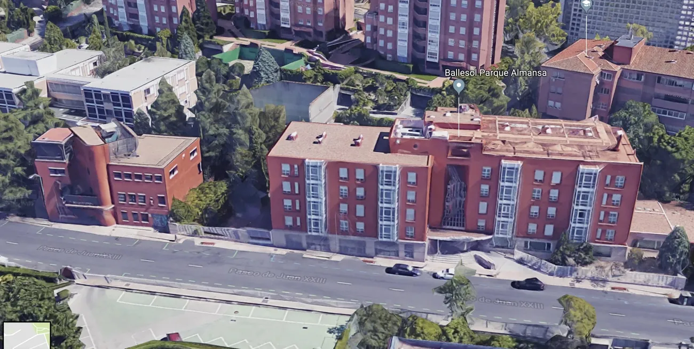
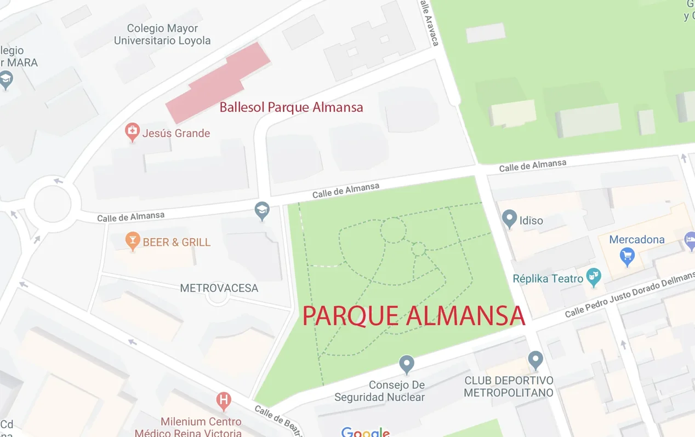
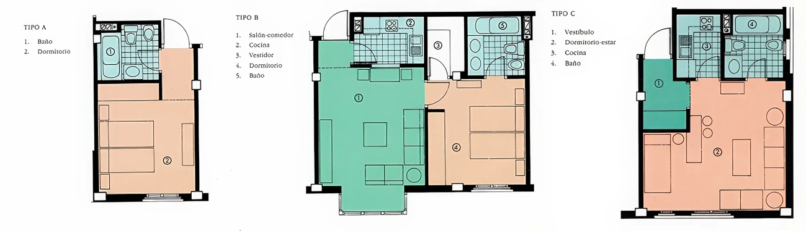
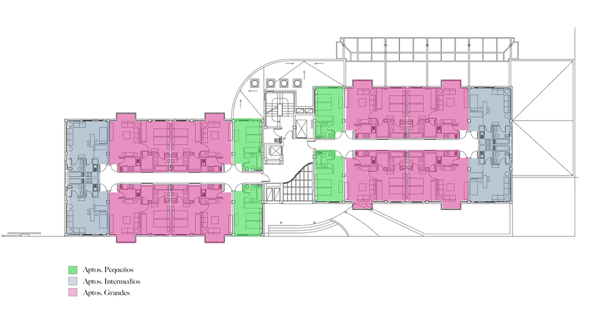
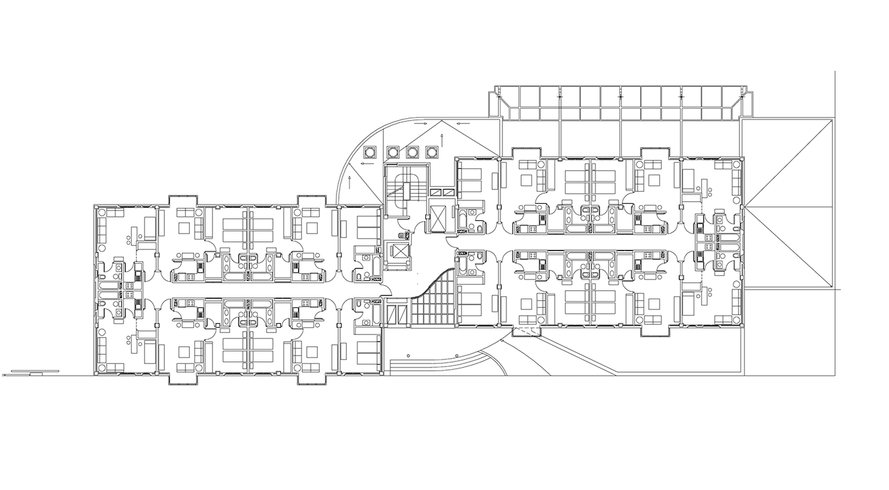
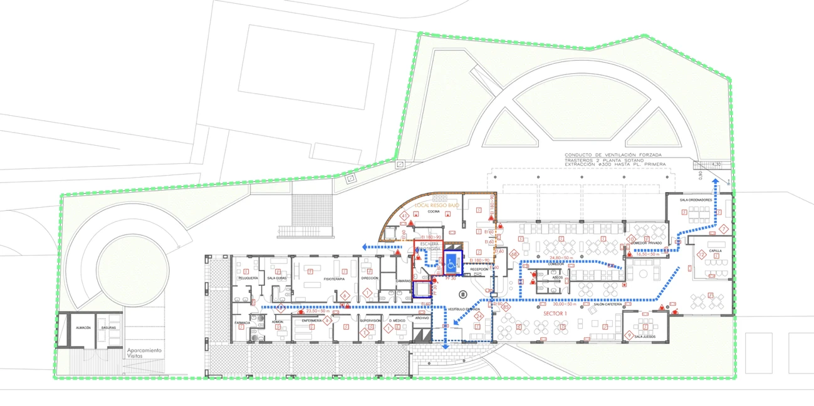
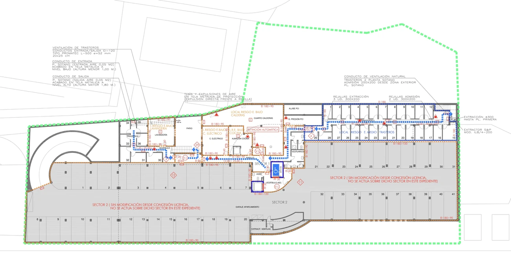
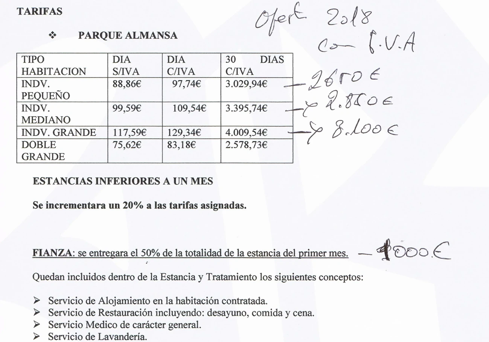

Expediente · Calle Juan XXIII, Madrid
Parque Almansa
La historia de un edificio pensado como residencia propia para la etapa final de la vida, convertido hoy en los Apartamentos para Mayores de Ballesol.

Origen
Rafael Alonso Las Heras Ruiz (RAHR) fue el principal impulsor del proyecto de la residencia de ancianos situada en la calle Juan XXIII. Fue quien trasladó la idea a empresarios innovadores con gran capacidad inversora, como Modesto Fraile y Albino Escribano, que constituyeron un grupo familiar para desarrollar el proyecto.
El nombre Motoalflo proviene de Modesto (Fraile), Tomás (Alonso), Albino (Escribano) y Florencio.
Al principio para la constitucion de Motoalflo, se emitieron 132 acciones de 250.000 pesetas cada una, 33 millones de pesetas, repartidas entre los distintos socios en función de su participación en el capital de la sociedad.
La construcción del edificio se retrasó durante varios años debido a la crisis económica y a la demora en la obtención de las licencias administrativas. Como consecuencia, la obra se ejecutó en un contexto económico menos favorable que el inicialmente previsto.
La idea del proyecto era innovadora para la España de entonces: construirte una residencia propia, relativamente pequeña, para cuando fueras mayor. Pero no cuajó en la época en que se terminó la obra. Ante la necesidad de financiación, Parque Almansa urgió a sus socios a que compraran apartamentos, así que Motoalflo compró 2 apartamentos y 2 plazas de garaje. Pero se necesitaba vender más, y salieron al mercado muchos apartamentos que se vendieron a terceros.
Motoalflo mas tarde realizó una ampliación de capital de otros 14 millones de pesetas, que no fué subscrita en su totalidad, emitiendose, 2376 acciones de 5.000 pesetas cada una, 11,88 millones de pesetas.

Estructura de propiedad
La Asociación —como la llamaba RAHR— tiene un 71,43 % de la propiedad total, que comprende a Motoalflo con un 2,92 %. El grupo Ballesol, compuesto por varias empresas y privados relativamente controlados por ellos, tiene un 18,91 %, y existen otros terceros que componen el 9,66 % restante.
- Asociación (RAHR) — 71,43 %
- Grupo Ballesol — 18,91 %
- Otros terceros — 9,66 %
Dentro del 71,43 % de la Asociación se incluye el 2,92 % de Motoalflo. Sin contar a Motoalflo, RAHR representa el 68,51 %.
Cada cinco años se negocia, el contrato entre el grupo Ballesosl y los propietarios de los apartamentos. En las negociaciones del 2023, los apartamentos cuyos dueños son Ballesol y sus asociados aceptaron las condiciones de la gestora Ballesol sin problema, RAHR —que representaba el 68,51 % sin considerar a Motoalflo—, acepto tambien las condiciones sin poner muchas trabas. Existe la percepción entre algunos socios de que, por tener mayoría de apartamentos, RAHR consigue condiciones económicas más favorables en las negociaciones.
Un tema importante: existen 52 plazas de garaje y 35 trasteros que, en principio, no se usan, y por los que Ballesol puede pagar un valor testimonial. La negociación, por tanto, es limitada, y ronda un 5–8 % más o menos, ya que Ballesol puede seguir operando con dos apartamentos menos, mientras que, si esos ingresos por alquileres no se reflejaran en nuestras cuentas, la cifra de negocio de Motoalflo quedaría considerablemente mermada.
El arquitecto
El arquitecto del edificio fue José Marañón, que despues invirtió en el proyecto, adquiriendo 2 apartamentos y 2 plazas de garaje.

El nombre de la empresa de Rafael Alonso Las Heras Ruiz, "PARQUE ALMANSA" no proviene de la casualidad.
Los apartamentos
El edificio se diseñó con tres tipos de apartamentos:
Pequeño
Grande — dos cuartos, cocina y vestidor
Intermedio — con cocina


Aunque originalmente eran 64 apartamentos (16 por planta), se realizaron obras en 4 de los apartamentos grandes, convirtiéndolos en 8 apartamentos pequeños. Por tanto, hoy la capacidad de estos «Apartamentos para Mayores (Ballesol)» es de 68 apartamentos, de los cuales 44 disponen de cocina propia.
Planos del edificio
El edificio consta de cuatro plantas tipo, planta baja y planta sótano, esta última con el garaje y los trasteros.



Tarifas Ballesol 2018
A continuación se muestran las tarifas que Ballesol aplicaba al alquiler de sus apartamentos en 2018

En la actualidad, el conjunto residencial consta de:
- 24 apartamentos pequeños (sin cocina).
- 16 apartamentos intermedios (con cocina).
- 28 apartamentos grandes (con cocina).
Situación actual
Hoy el edificio opera como Apartamentos para Mayores bajo la marca Ballesol. Puede consultarse todos los datos en la pagina web oficial apartamentos.ballesol.es/madrid/parque-almansa.
Mientras a Ballesol, a los dueños de apartamentos de sus socios y allegados (19,91 %) y a Parque Almansa y allegados (68,51 %) les interese seguir explotando estos apartamentos para mayores, no existirá la posibilidad de cambio de uso, que siempre será terciario: hoteles y alojamientos, oficinas, comercio, restauración, centros sanitarios privados, residencias de ancianos, residencias de estudiantes, algunos equipamientos asistenciales, etc.
Desde un punto de vista económico, el reducido número de apartamentos (68) limita las economías de escala. Además, 44 de ellos disponen de cocina propia, una característica que puede restringir determinadas alternativas de explotación y afectar a la rentabilidad de algunas de las alternativas posibles, en el caso de un cambio de uso del modelo de negocio.